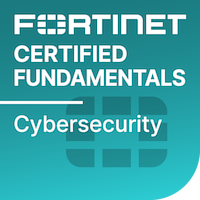
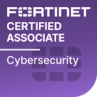
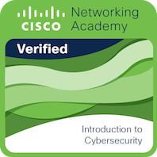

Arsal Shahzaib Bin Mushtaq
Passionate Computer Science student dedicated to exploring the realms of Cybersecurity through practical challenges who specialized in Database Technologies. Worked in an industrial robotics project, leveraging skills to bridge the gap between theoretical knowledge and real-world applications.
Self Learning
- Completing the self paced online courses on TryHackMe.com and Cisco Learning Academy.
- Got to know a bit about technologies like ELK stack and how to use it with basic data.
Education
-
BACHELOR’S IN COMPUTER SCIENCE
- COMSATS University, Lahore
- Major: Data Science | 2020 - 2024
-
INTERMEDIATE IN COMPUTER SCIENCE
- Forman Christian College, Lahore
- Computer Science, Mathematics, Statistics | 2017 - 2019
-
MATRICULATION
- St. Anthony’s High School, Lahore
- Computer Science | 2015 - 2017
Skills
Projects
-
A SITUATION AWARENESS SOLUTION FOR INDUSTRIAL ROBOTS (2020 - 2024)
- Proposed the integration of Industry 4.0 functionalities into Industry 3.0 robotic systems through cost-effective hardware solutions, optimizing automation processes.
- Engineered a comprehensive system utilizing Webots for simulation, Python for Robot Controllers, MySQL for database management, and React for frontend development.
Experience
-
NETWORK SECURITY (INTERNSHIP)
SecureICT Solutions | Feb 2024 to May 2024
- Configured and implemented a Fortinet VM firewall on a live network, including setting up interfaces, static routes, and demonstrating expertise in Fortinet network security solutions.
Certifications



Interests and Volunteer Work
- Content creation as a hobby
- Completing self-paced courses
- Served as Secretary General at ACM Student Chapter COMSATS Lahore for a year.
- Served as Director of Photography at ACM Student Chapter COMSATS Lahore for 11 months and has supervised society’s events i.e. seminars workshops, and Student Week events etc.
- Participated in a photography exhibition held by Forman Photography Society in 2018.